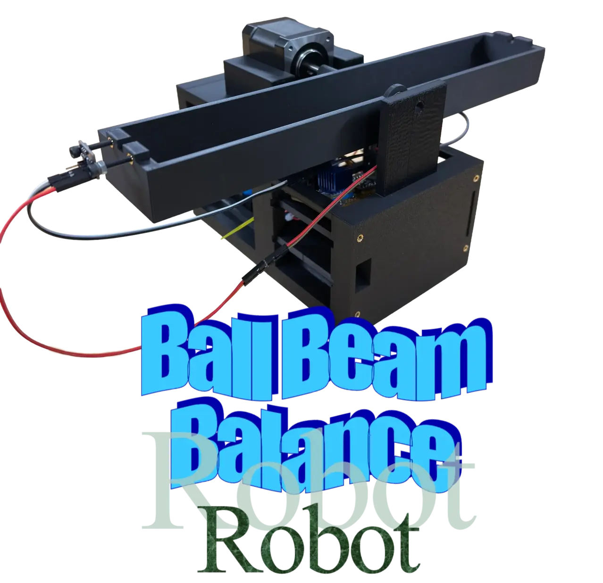

Ball-on-Beam Dynamic Balancing Prototype

Robot 2 – Ball-on-Beam prototype used to explore feedback control and sensor-based balancing.
Robot 2 is a Ball-on-Beam dynamic balancing robot developed as an educational control-system demonstrator. The system uses a Time of Flight sensor to measure the ball position along the beam, a NEMA 17 stepper motor to tilt the beam, and a PID controller running on an RP2040 board to stabilize the ball around a target position, usually the center of the beam.
This robot was built to educate schoolkids about core physics and robotics concepts, focusing on how a robot can use a sensor to balance a ball in real-time. The mechanical design includes a 3D-printed base, hinge, beam supports, and couplers that interface the stepper shaft to the beam that house the RP2040 board, ToF sensor, and motor.
Educationally, Robot 2 allows K–12 students to see how changing controller parameters affects system behavior in real time. By watching the ball move and settle on the beam, students gain an intuitive understanding of feedback, stability, and the tradeoffs between response speed and overshoot.